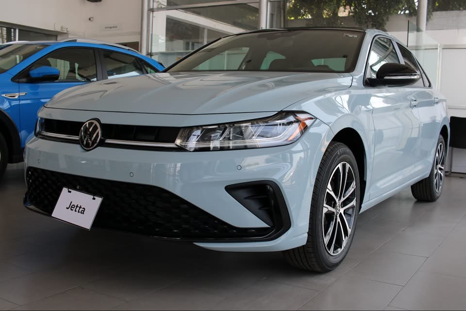

Jetta
Tecnología, confort y carácter Volkswagen. Descubre una gama que va desde la practicidad de Jetta Trendline hasta el alto desempeño de Jetta GLI.

¿Por qué Jetta?
Un sedán pensado para combinar tecnología, espacio y desempeño.
Motor TSI
La gama Jetta combina desempeño y eficiencia con tecnología turbo.
Tecnología a bordo
Digital Cockpit, conectividad y pantallas touch disponibles dependiendo de la versión.
Asistentes de manejo
Las versiones superiores integran sistemas como ACC, Lane Assist y monitoreo de punto ciego.
Conoce las versiones
Desde Jetta Trendline hasta la experiencia deportiva de GLI.
Trendline
Motor 1.4 TSI · 150 hp · Tiptronic 8 velocidades
- Volkswagen Digital Cockpit
- Pantalla touch de 8.25"
- Volkswagen App-Connect
- Control de velocidad crucero
- Faros principales LED
- Rines de acero de 16"
Comfortline
Motor 1.4 TSI · 150 hp · Tiptronic 8 velocidades
- Pantalla touch de 10"
- Wireless App-Connect
- Cargador inalámbrico
- Cámara de visión trasera
- Control crucero adaptativo ACC
- Lane Assist
- Sensores delanteros y traseros
- Rines de aluminio de 16"
Sportline
Motor 1.4 TSI · 150 hp · Tiptronic 8 velocidades
- Pantalla touch de 10"
- VW Premium Sound con Subwoofer
- Light Assist
- Monitoreo de punto ciego
- Iluminación ambiental de 10 colores
- Interior Total Black
- Rines de aluminio de 17"
- Techo corredizo panorámico
GLI
Motor 2.0 TSI · 230 hp · DSG 7 velocidades
- 350 Nm de torque
- Launch Control
- Diferencial deportivo VAQ
- Dirección progresiva
- Selector de modos de manejo
- ACC y Lane Assist
- Asientos deportivos calefactables y ventilados
- VW Premium Sound con Subwoofer
- Rines de aluminio de 18"
- Techo corredizo panorámico
¿Cuál Jetta va contigo?
Cuéntame qué estás buscando y te ayudo a comparar versiones, disponibilidad y opciones de financiamiento.